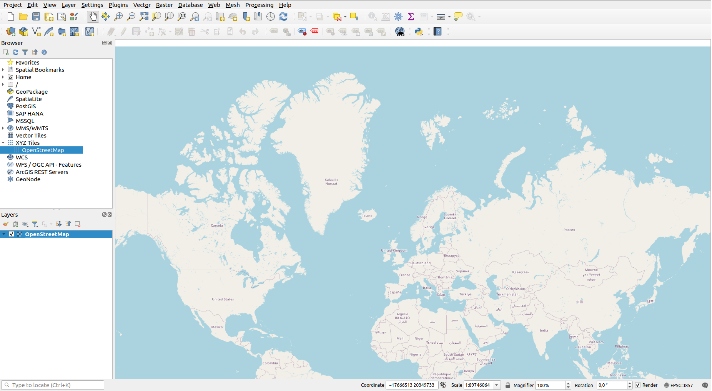
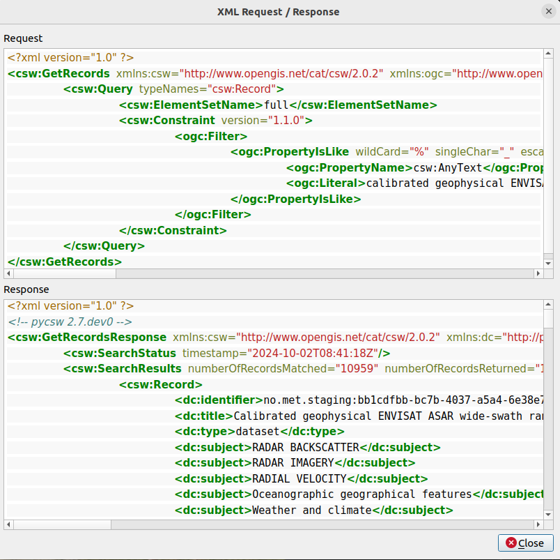
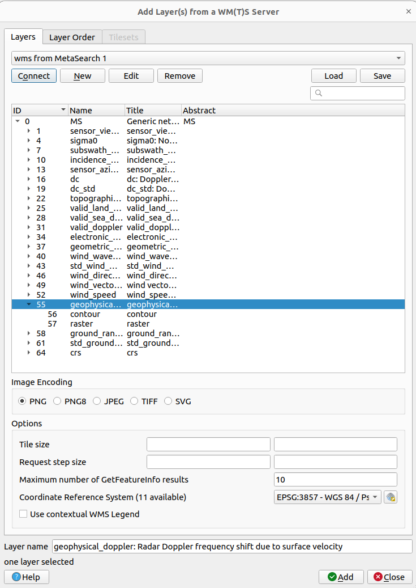

3. Use and Visualise Data#
This notebook is to serve as a manual on how to use and visualise the SAR Doppler data. This can be done in numerous ways. One alternative is already showcased in the visualisation part in the data.met.no section section. However, in the following two other options are presented. These are through using the WMS functionalities of QGIS and through the use of plotting in python, respectively.
The code snippet below is included to set up and activate a virtual environment for which the necessary packages are downloaded. These are listed in the “requirements.txt” folder.
The purpose of this code-snippet is to make the manual more user friendly. This should ensure that each user can run these notebooks without further ado.
%%capture
!python3 -m venv .venv # sets up a virtual environment
!source .venv/bin/activate # Activates said environment
# Installing the required packages to current environment
!pip install -r ../requirements.txt
'''
The "%%capture" command ensures that the outputs
(in this case directories) are not displayed.
'''
3.1. Visualise Data Variables with WMS in QGIS#
NB! In the following guide the endpoint “https://csw.s-enda-staging.k8s.met.no” must be exchanged with “https://data.csw.met.no” to be able to find any data if not granted access to the MET Norway.
The MET Norway’s S-ENDA CSW catalog service is also available through QGIS. Desired series/datasets can therefore also be found and inspected as follows:
First open Qgis and select a map, e.g. the OpenStreetMap:

From the menu select “Web > MetaSearch > MetaSearch”.

Select “Services > New” to open the “New Catalog Service”.

For the “Name” type “data.csw.met.no” (not “csw.s-enda-staging.k8s.met.no” as the image suggests). As for the “URl”, type “https://data.csw.met.no” (not “https://csw.s-enda-staging.k8s.met.no” as the image suggests). By then clicking “Ok” the required server is added.

Without exiting “MetaSearch”, move back to the “Search” tab. Now the server that was just added is selected in the “From”-menu (this should now rather be “data.csw.met.no”).

To get a list of the available series/datasets there is the option to add different search parameters under the “Search” tab. Adding keywords will single out the series and datasets with these as part of their “Title”. To find the “calibrated geophysical ENVISAT ASAR wide-swath range frequency shift retrievals” series/datasets the sequence in italics can be provided into the “Keywords” search tab, but “ENVISAT ASAR” or “Doppler” will also suffice. To actually search for datasets klick the “Search” option. The series/datasets will then show up in the “Results” section.

When a search is made, the results can alternatively be displayed as a scrollable list of XMLs. This is easily done by clicking “View Search Results as XML” in the “MetaSearch” window. This will open a new window, namely “XML Request / Response”. Here the resulting series/datasets from the search are displayed as XML.

Moving back to the MetaSearch window the possibility to quickly display the geographical extent of selected series/dataset is available. By klicking one of series/datasets a red bounding box will pop up on the map highligting the geographical extent of said dataset.


To further display the full record information alongside adherent links, double klick the selected series/dataset. A new window named “Record Metadata” will then be opened.

If the exact date and time of the desired dataset is known, this can be also added alongside keywords as “ENVISAT ASAR” or “Doppler” in the MetaSearch. This will single out this specific dataset.


There is also the possibility to alter the bounding box of the desired datasets. This box is altered by altering the latitude and longitude values found within the “Ymax/min” and “Xmax/min” search tabs, respectively. To reset these quickly to global default settings click “Set Global”. Clicking “Map Extent” will limit the bounding box to the extent of the map.


Finally, to visualise one specific variable of the dataset, e.g. the geophysical doppler, start by clicking the “Add Data” option when the desired dataset is selected. Select “Add WMS/WMTS”:

As shown below, choose the desired variable from the “Add Layer(s) from a WM(T)S Server” window that pops up. Click on “Add” in the lower right hand corner to add the layer. The variable will then show up as a layer on the left hand side menu along with the selected map. A visualization of the selected data variable should now be visible on the map.


3.2. Plotting Data Variables with Python#
One last alternative is presented here through the use of plotting functions in python. These functions rely on the use of the python libraries cartopy and xarray, along with some other packages. Therefore, the first thing to do is to ensure that the required packages are installed and imported:
# Import the required packages:
import os
import glob
import xarray as xr
import matplotlib.pyplot as plt
import numpy as np
import cartopy.crs as ccrs
import cartopy.feature as cfeature
from matplotlib.colors import TwoSlopeNorm
from mpl_toolkits.axes_grid1.inset_locator import inset_axes
Next up is to select the dataset which contain the data that is to be plotted:
# Open a dataset using its OPENDAP-url
# (file from 2012-01-27T21:50:05)
''' The backslashes serves as line shifts '''
ds = xr.open_dataset('''https://thredds.met.no/thredds/dodsC/\
remotesensingenvisat/asar-doppler/2012/01/27/\
ASA_WSDV2PRNMI20120127_215005_000612433111_00101_51839_0000.nc''')
ds
<xarray.Dataset> Size: 45MB
Dimensions: (y: 602, x: 851, zero_doppler_time: 602)
Coordinates:
* zero_doppler_time (zero_doppler_time) datetime64[ns] 5kB 2012-01-...
Dimensions without coordinates: y, x
Data variables: (12/23)
sensor_view_angle (y, x) float32 2MB ...
sigma0 (y, x) float32 2MB ...
subswath_number (y, x) float32 2MB ...
incidence_angle (y, x) float32 2MB ...
sensor_azimuth (y, x) float32 2MB ...
dc (y, x) float32 2MB ...
... ...
geophysical_doppler (y, x) float32 2MB ...
ground_range_current (y, x) float32 2MB ...
std_ground_range_current (y, x) float32 2MB ...
longitude (y, x) float32 2MB ...
latitude (y, x) float32 2MB ...
crs int32 4B ...
Attributes: (12/60)
GDAL: GDAL 3.2.1, released 2020/12/29
acknowledgement: GSAR IDL pre-processing software was develope...
azimuth_start_time: 2012-01-27T21:50:05.173597
contributor_email: jeong-won.park@kopri.re.kr, hjoh@norceresearc...
contributor_institution: Korea Polar Research Institute (KOPRI), NORCE...
contributor_name: Jeong-Won Park, Harald Johnsen, Geir Engen, M...
... ...
time_coverage_end: 2012-01-27T21:51:07.925870+00:00
time_coverage_start: 2012-01-27T21:50:04.077748+00:00
title: Calibrated geophysical ENVISAT ASAR wide-swat...
title_lang: en
summary_no: Kalibrert geofysisk Dopplerskift fra ENVISAT ...
title_no: Kalibrert geofysisk ENVISAT ASAR Dopplerskift...The netCDF file format combined with the xarray python library makes it easy to plot different variables. The example below is arguably the easiest and most efficient way of plotting a variable from an opened xarray.Dataset. The metadata of the dataset in question is used to provide axis- and colorbar labels.
In the following example the variable “geophysical_doppler” from the xarray.Dataset (defined as ds) is plotted by simply using .plot(). Here the axis labels are automatically named “x” and “y” as these are the dimensions of “geophysical_doppler”. From the “Data variables” of the xarray.Dataset (see the interactive menu above), both the “standard_name” and the “units” (in square brackets) of the plotted variable “geophysical_doppler” are also automatically added as the colorbar label.
# Plotting a selected variable from the dataset opened above:
ds.geophysical_doppler.plot()
plt.show()

Below is a code snippet which easily extracts the wanted files from the current directory (alternativly from “Downloads”) given a recognicable part of the filename. This is meant for extracting files which have been downloaded locally. For more information on how to download datasets see How to Open Datasets.
### Opens Downloaded file
# ds_arctic = xr.open_dataset('''ASA_WSDV2PRNMI20120127_215005
# _000612433111_00101_51839_0000
# .nc''')
''' Downloaded file found in the current notebook folder '''
### Stores the path of the current directoy
path2files = os.getcwd()
'''
# Alternative for when a dataset is downloaded locally and stored in
# "Downloads" - which is the default placement
### Get the path of the home directory
home_dir = os.path.expanduser("~")
#### Use os.path.join to combine paths
path2files = os.path.join(home_dir, "Downloads")
'''
### Specify something to recognice the desired nc-files,
# extract them and put them in a list
desired_files_paths = glob.glob(os.path.join(path2files, "ASA_*.nc"))
''' Where "ASA_*.nc" is
"filename_starts_with_str*filename_ends_with"
'''
# Open the first dataset
ds = xr.open_dataset(desired_files_paths[0])
# Interactive overview of the dataset
# - when opened as a jupyter notebook or a jupyter book
ds
<xarray.Dataset> Size: 45MB
Dimensions: (y: 606, x: 844)
Dimensions without coordinates: y, x
Data variables: (12/22)
sensor_view_angle (y, x) float32 2MB ...
sigma0 (y, x) float32 2MB ...
subswaths (y, x) float32 2MB ...
incidence_angle (y, x) float32 2MB ...
sensor_azimuth (y, x) float32 2MB ...
dc (y, x) float32 2MB ...
... ...
wind_speed (y, x) float32 2MB ...
fdg (y, x) float32 2MB ...
u_range (y, x) float32 2MB ...
std_u_range (y, x) float32 2MB ...
longitude (y, x) float32 2MB ...
latitude (y, x) float32 2MB ...
Attributes: (12/75)
GDAL: GDAL 3.2.1, released 2020/12/29
acknowledgement: GSAR IDL pre-processing software was develope...
azimuth_start_time: 2012-03-31T00:42:03.919584
contributor_email: jeong-won.park@kopri.re.kr, hjoh@norceresearc...
contributor_institution: Korea Polar Research Institute (KOPRI), NORCE...
contributor_name: Jeong-Won Park, Harald Johnsen, Geir Engen
... ...
ysamplefreq_slc: 1711.9144385026736
ysize: 635
ytime: 2012-03-31T00:42:03.919584Z
ytime_slc: 2012-03-31T00:42:02.997808
summary_no: Kalibrert geofysisk Dopplerskift fra ENVISAT ...
title_no: Kalibrert geofysisk ENVISAT ASAR Dopplerskift...3.2.1. Cartesian Plotting Function#
Below is an easy to use plotting function to visualize your desired data variable on a map. This function relies on the python library cartopy, along several other packages that are imported at the very begining of this Plotting with Python section. It is also possible to set the spatial extent of the plot yourself - default is plotting the spatial extent of the variable itself as defined in the metadata.
def plotting_variables_on_a_map(
ds,
variable,
lat_min = 'default', lat_max = 'default',
lon_min = 'default', lon_max = 'default',
number_of_colorbar_intervals = 100,
fractional_title_spacing = 0.05,
title_fontsize = 15,
cbar_label_fontsize = 12):
### Create a new xarray DataArray with latitude and longitude
# as coordinates
plotable_variable = variable.assign_coords(
{'lat': (('y', 'x'), ds.latitude.values),
'lon': (('y', 'x'), ds.longitude.values)
})
### Extract the geospatial extent of the variable that
# is plotted
if lat_min == 'default':
lat_min = float(plotable_variable.lat.min())
else:
lat_min = lat_min
if lat_max == 'default':
lat_max = float(plotable_variable.lat.max())
else:
lat_max = lat_max
if lon_min == 'default':
lon_min = float(plotable_variable.lon.min())
else:
lon_min = lon_min
if lon_max == 'default':
lon_max = float(plotable_variable.lon.max())
else:
lon_max = lon_max
#### Ready to plot the variable on a map using subplot package
# of matplotlib.pyplot
# Create the main plot and set the projection
fig, ax = plt.subplots(
1,
figsize=(16, 12),
subplot_kw={'projection': ccrs.PlateCarree()})
ax.axis('off') # Turn off axes
ax.coastlines() # Add coastlines
### Create the gridlines and configure the labels
gl = ax.gridlines(draw_labels=True)
gl.bottom_labels = True # Default - Include bottom labels
gl.left_labels = True # Default - Include LH side labels
gl.top_labels = True # Default - Include top labels
gl.right_labels = False # Not default - Exclude RH side labels
### Defining var_min, var_max and var_step
# using the variable attribute minmax
# to extract var_min and var_max
var_min = int(plotable_variable.minmax.split(' ')[0])
var_max = int(plotable_variable.minmax.split(' ')[1])
### Defining the colorbar intervals based on desired
# number of colorbars
var_step = ((var_max - var_min)/number_of_colorbar_intervals)
### Redefining the max val to improve visuals of colorbar
# around center
var_max=int(plotable_variable.minmax.split(' ')[1])+var_step
### Add features for land and ocean
ax.add_feature(cfeature.LAND, facecolor='tan', zorder=2, alpha = 0.5)
''' Tan color for land
- Placed third in line for plotting '''
ax.add_feature(cfeature.OCEAN, facecolor='grey', zorder=0)
''' Grey color for ocean
- Placed first in line for plotting '''
### Plot the data
cax = plotable_variable.plot.contourf(
ax=ax, x='lon', y='lat',
extend='neither',
norm=TwoSlopeNorm(vmin=var_min,
vcenter=0,
vmax=var_max),
levels=np.arange(var_min, var_max, var_step),
add_colorbar=False, # Do not automatically add colorbar
zorder = 1
)
### Create and inset axes for the colorbar
cbar_ax = inset_axes(
ax,
width="5%", # width = 5% of parent_bbox width
height="100%", # height : 100% of parent_bbox height
loc='lower left',
bbox_to_anchor=(1.05, 0., 1, 1),
bbox_transform=ax.transAxes,
borderpad=0
)
### Create colorbar
cbar = fig.colorbar(cax,
cax=cbar_ax,
orientation='vertical')
### Extract units from the plotted variable to use as
# label for colorbar
cbar.set_label(f'[{plotable_variable.units}]',
fontsize = cbar_label_fontsize)
# Set and adjust title
mid_lat = (lat_min + lat_max) / 2
mid_lon = (lon_min + lon_max) / 2
ax.text(
mid_lon,
lat_max+((lat_max - lat_min)*fractional_title_spacing),
f'{plotable_variable.long_name}',
fontsize=title_fontsize,
ha='center')
# Setting the extent on the map that is plotted
ax.set_ylim(lat_min, lat_max)
ax.set_xlim(lon_min, lon_max)
plt.show()
return
3.2.2. Cartesian Plotting Examples#
In the following, some examples on how to utilize the plotting function above (and their results) are shown.
### Plotting the desired variable within its geographical extent
# - By default using the metadata for the geographical extent
# as lat/lon min/max values.
### Plotting geophysical_doppler
plotting_variables_on_a_map(
ds = ds,
variable = ds.geophysical_doppler,
number_of_colorbar_intervals = 100, # Default value
title_fontsize = 15, # Default value
cbar_label_fontsize = 12 # Default value
)
---------------------------------------------------------------------------
AttributeError Traceback (most recent call last)
Cell In[7], line 8
1 ### Plotting the desired variable within its geographical extent
2 # - By default using the metadata for the geographical extent
3 # as lat/lon min/max values.
4
5 ### Plotting geophysical_doppler
6 plotting_variables_on_a_map(
7 ds = ds,
----> 8 variable = ds.geophysical_doppler,
9 number_of_colorbar_intervals = 100, # Default value
10 title_fontsize = 15, # Default value
11 cbar_label_fontsize = 12 # Default value
12 )
File ~/src/SAR/my-book-files/SARbook/.venv/lib/python3.10/site-packages/xarray/core/common.py:305, in AttrAccessMixin.__getattr__(self, name)
303 with suppress(KeyError):
304 return source[name]
--> 305 raise AttributeError(
306 f"{type(self).__name__!r} object has no attribute {name!r}"
307 )
AttributeError: 'Dataset' object has no attribute 'geophysical_doppler'
Then, some examples on how to alter the spatial extent of the map on which the selected variable is plotted (three examples showing Hawaii in the Pacific Ocean):
### Plotting geophysical_doppler
plotting_variables_on_a_map(
ds = ds,
variable = ds.geophysical_doppler,
lat_min = 15, lat_max = 30,
lon_min = -200, lon_max = -154,
number_of_colorbar_intervals = 100, # Default value
fractional_title_spacing = 0.10, # Default 0.05
title_fontsize = 30, # Default value
cbar_label_fontsize = 10 # Default 12
)

### Plotting geometric_doppler
plotting_variables_on_a_map(
ds = ds,
variable = ds.geometric_doppler,
lat_min = 15, lat_max = 30,
lon_min = -200, lon_max = -154,
number_of_colorbar_intervals = 100, # Default value
fractional_title_spacing = 0.10, # Default 0.05
title_fontsize = 30, # Default value
cbar_label_fontsize = 10 # Default 12
)
### Plotting wind_waves_doppler
plotting_variables_on_a_map(
ds = ds,
variable = ds.wind_waves_doppler,
lat_min = 15, lat_max = 30,
lon_min = -200, lon_max = -154,
number_of_colorbar_intervals = 100, # Default value
fractional_title_spacing = 0.20, # Default 0.05
title_fontsize = 30, # Default value
cbar_label_fontsize = 10 # Default 12
)

And finally, some data variable plotted on (half of) the world map:
### Plotting geophysical_doppler
plotting_variables_on_a_map(
ds = ds,
variable = ds.geophysical_doppler,
lat_min = -90, lat_max = 90,
lon_min = -180, lon_max = 0,
number_of_colorbar_intervals = 100, # Default value
fractional_title_spacing = 0.08, # Default 0.05
title_fontsize = 30, # Default 15
cbar_label_fontsize = 15 # Default 12
)
3.2.3. Plotting Function with Polar Projection#
As the SAR Doppler data is a great asset when researching areas at high latitudes, there is also provided an additional example function which extracts and plots desired variables on a map with an Arctic projection. Again the python library cartopy is utilized.
def ArcticPlot_variables_on_a_map(ds,
variable,
map_color,
map_start_longitude = -180,
map_end_longitude = 180,
map_edge_latitude = 60,
map_center_latitude = 90,
title_fontsize = 15,
log_scale_option = False):
### Create a new xarray DataArray with
# latitude and longitude as coordinates
if log_scale_option == True:
plotable_variable = (np.log10(variable)*10).assign_coords(
{'lat': (('y', 'x'), ds.latitude.values),
'lon': (('y', 'x'), ds.longitude.values)
})
'''converting the linear backscatter values to dB (decibel)'''
else:
plotable_variable = variable.assign_coords(
{'lat': (('y', 'x'), ds.latitude.values),
'lon': (('y', 'x'), ds.longitude.values)
})
fig, ax = plt.subplots(1, figsize=(10, 6))
fig.suptitle(f'{variable.long_name}',
fontsize = title_fontsize)
ax.axis('off') # Turn off axis
# Set the projection - NorthPolarStereo
ax = plt.axes(projection=ccrs.NorthPolarStereo())
ax.coastlines() # Adding coastlines
ax.set_extent([map_start_longitude,
map_end_longitude,
map_edge_latitude,
map_center_latitude],
crs=ccrs.PlateCarree())
# Add features for land and ocean
ax.add_feature(cfeature.LAND,
facecolor='tan',
zorder=2,
alpha = 0.5)
''' Tan color for land - Placed third in line for plotting '''
ax.add_feature(cfeature.OCEAN,
facecolor='grey',
zorder=0)
''' Grey color for ocean - Placed first in line for plotting'''
if log_scale_option == True:
plotable_variable.plot.pcolormesh(
ax=ax, x='lon', y='lat',
transform=ccrs.PlateCarree(), # added transform argument
extend='neither',
cbar_kwargs = {'label':'Decibel [dB]'},
cmap=map_color,
zorder = 1 # Placed second in line for plotting
)
else:
plotable_variable.plot.pcolormesh(
ax=ax, x='lon', y='lat',
transform=ccrs.PlateCarree(), # added transform argument
extend='neither',
cbar_kwargs = {'label': f'[{variable.units}]'},
cmap=map_color,
zorder = 1 # Placed second in line for plotting
)
# Draw gridlines on the map
gl = ax.gridlines(draw_labels=True)
plt.tight_layout()
plt.show()
return
3.2.4. Polar Projection Plotting Examples#
By getting hold of a dataset from somewhere close to the Arctic, the plotting of different variables can be done as follows:
### Opens Downloaded file
# ds_arctic = xr.open_dataset('''ASA_WSDH2PRNMI20120322_111545
# _000623843113_00023_52623_0000
# .nc''')
''' Downloaded file found in the notebook folder '''
''' The backslashes serves as line shifts '''
# Opens dataset through the associated OPENDAP-link
ds_arctic = xr.open_dataset('''https://thredds.met.no/thredds/dodsC/\
remotesensingenvisat/asar-doppler/2012/03/22/\
ASA_WSDH2PRNMI20120322_111545_000623843113_00023_52623_0000.nc''')
ds_arctic
<xarray.Dataset> Size: 46MB
Dimensions: (y: 611, x: 847, zero_doppler_time: 611)
Coordinates:
* zero_doppler_time (zero_doppler_time) datetime64[ns] 5kB 2012-03-...
Dimensions without coordinates: y, x
Data variables: (12/23)
sensor_view_angle (y, x) float32 2MB ...
sigma0 (y, x) float32 2MB ...
subswath_number (y, x) float32 2MB ...
incidence_angle (y, x) float32 2MB ...
sensor_azimuth (y, x) float32 2MB ...
dc (y, x) float32 2MB ...
... ...
geophysical_doppler (y, x) float32 2MB ...
ground_range_current (y, x) float32 2MB ...
std_ground_range_current (y, x) float32 2MB ...
longitude (y, x) float32 2MB ...
latitude (y, x) float32 2MB ...
crs int32 4B ...
Attributes: (12/60)
GDAL: GDAL 3.2.1, released 2020/12/29
acknowledgement: GSAR IDL pre-processing software was develope...
azimuth_start_time: 2012-03-22T11:15:45.996631
contributor_email: jeong-won.park@kopri.re.kr, hjoh@norceresearc...
contributor_institution: Korea Polar Research Institute (KOPRI), NORCE...
contributor_name: Jeong-Won Park, Harald Johnsen, Geir Engen, M...
... ...
title_lang: en
summary_no: Kalibrert geofysisk Dopplerskift fra ENVISAT ...
title_no: Kalibrert geofysisk ENVISAT ASAR Dopplerskift...
geospatial_lat_max: 85.42311
geospatial_lat_min: 80.24043
geospatial_lon_max: 44.654285Underneath there are again some examples on how to plot a specified variable on the Arctic map. For each example the map is more and more zoomed in on the data that is plotted.
# The entire Arctic
ArcticPlot_variables_on_a_map(ds = ds_arctic,
variable = ds_arctic.geophysical_doppler,
map_color = 'Blues_r',
map_start_longitude = -180,
map_end_longitude = 180,
map_edge_latitude = 65, # Default 60
map_center_latitude = 90, # Default 90
title_fontsize = 20 # Default 15
)
# Zooming in on the Arctic Ocean
ArcticPlot_variables_on_a_map(ds = ds_arctic,
variable = ds_arctic.geophysical_doppler,
map_color = 'Blues_r',
map_start_longitude = -180,
map_end_longitude = 180,
map_edge_latitude = 75, # Default 60
map_center_latitude = 90, # Default 90
title_fontsize = 20 # Default 15
)
# A quarter of the sphere covering the Arctic Ocean
ArcticPlot_variables_on_a_map(ds = ds_arctic,
variable = ds_arctic.geophysical_doppler,
map_color = 'Blues_r',
map_start_longitude = 0,
map_end_longitude = 90,
map_center_latitude = 90, # Default 90
map_edge_latitude = 80, # Default 60
title_fontsize = 20 # Default 15
)

# Close up of the plotted variable
ArcticPlot_variables_on_a_map(ds = ds_arctic,
variable = ds_arctic.geophysical_doppler,
map_color = 'Blues_r',
map_start_longitude = 0,
map_end_longitude = 44,
map_center_latitude = 86, # Default 90
map_edge_latitude = 80, # Default 60
title_fontsize = 20 # Default 15
)

As an additional option, the plot below show that the selected variable, in this instance backscatter (sigma0), is attainable to plot on a log scale [dB] through setting the log_scale_option as True.
ArcticPlot_variables_on_a_map(ds = ds_arctic,
variable = ds_arctic.sigma0,
map_color = 'gray_r',
map_start_longitude = 0,
map_end_longitude = 44,
map_center_latitude = 86, # Default 90
map_edge_latitude = 80, # Default 60
title_fontsize = 20, # Default 15
log_scale_option = True
)